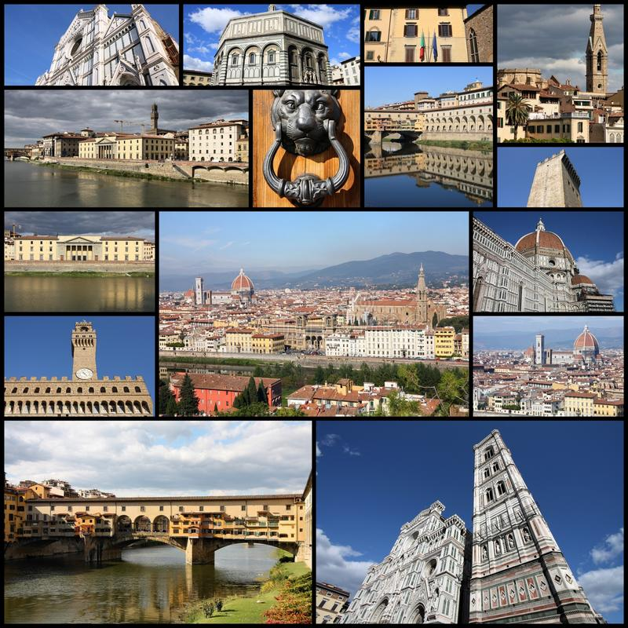

Firenze

Флоренция, гордость Италии и один из красивейших городов мира, раскинулась в просторной долине, пересеченной рекой Арно. Город расположен на севере страны, являясь административным центром исторического региона Тоскана. С севера и востока к Флоренции подступают отроги Апеннинских гор, достигающие километровой высоты. Горы и зеленые холмы, окружающие город, великолепно оттеняют красоту горделивых флорентийских церквей и роскошных дворцов, составляя невероятной красоты пейзажи. Во Флоренцию стремятся попасть туристы со всего мира, ведь нигде на планете нет такого обилия шедевров архитектуры, живописи и скульптуры эпохи Возрождения, образующих целые ансамбли, разбавленные вкраплениями романских и готических построек. Здесь писали свои бессмертные произведения Данте, Боккаччо и Макиавелли, оттачивали мастерство Рафаэль, Леонардо да Винчи и Боттичелли, вдыхали жизнь в мрамор Микеланджело, Челлини, Донателло, Брунеллески. Духовный мир каждого, кто побывает в этом городе, непременно изменится и обогатится, поэтому Флоренция до сих пор, словно магнит, притягивает к себе творцов и ценителей искусства. Непринужденно чувствуют себя здесь и молодые люди, ведь столица Ренессанса побуждает к любви. Флоренция сумела превосходно сохранить свой исторический облик. Однако все ее очарование способен ощутить лишь тот, кто не станет ограничиваться посещением музеев, картинных галерей и церквей. Отправьтесь в неспешное путешествие по ее старинным улочкам и закоулкам, хранящим атмосферу Средневековья, посидите в траттории,
загляните в мастерские ремесленников, где до сих пор работают кожевенники и гончары, изготавливающие великолепные изделия в технике майолика. Стоит потратить время и на посещение многочисленных магазинов, где продается модная одежда от лучших итальянских дизайнеров. Коренные жители Флоренции, с детства до последнего дыхания окруженные произведениями высокого искусства, подтверждают правоту архитектора Корбюзье, тонко подметившего, что среда формирует личность. Проходя по улицам города, не устаешь удивляться безошибочному вкусу горожан, который проявляется и в элегантных нарядах пожилых
дам, и в стильной одежде молодежи. В Италии утверждают, что только флорентийцам удается так виртуозно и изящно завязать галстук. Славятся жители Флоренции также своим остроумием и некоторой надменностью по отношению к приезжим, которую они успешно маскируют показной любезностью.
← На главную